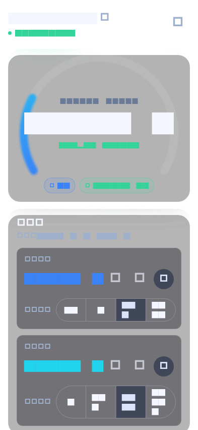
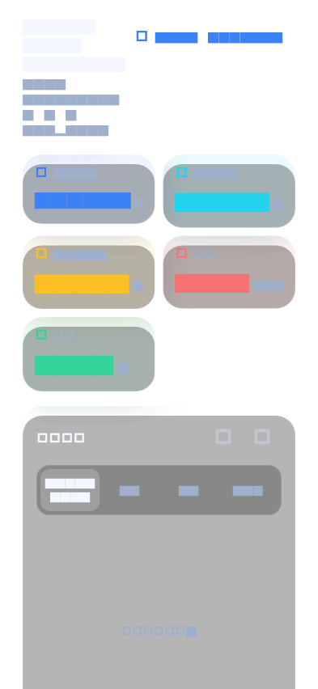
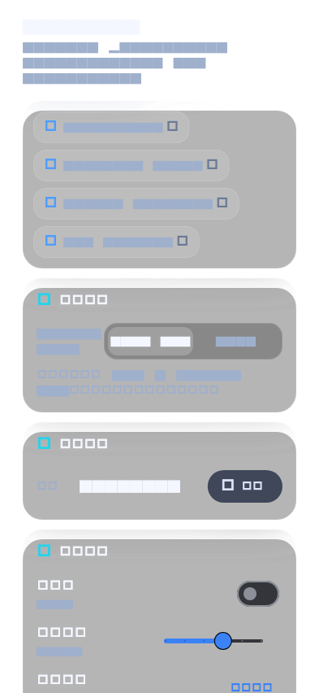

All 136 deterministic layout profiles passed after the accessibility layout fixes. Eight 393x852 golden captures matched their baselines. The macOS Patrol critical mock-device flow also passed.
| Layer | Status | Result |
|---|---|---|
| Static analysis | PASS | flutter analyze |
| Flutter unit/widget suite | PASS | 216 passed, 0 failed |
| Layout matrix | PASS | 136 passed, 0 overflow |
| Golden baseline | PASS | 8 captures at 393x852 / scale 1.0 |
| Patrol macOS | PASS | 1 critical mock-device flow passed |
| Patrol web | UNSUPPORTED | Web cannot compile sqlite3/dart:ffi. |



Machine-readable details: summary.json · overflow/issues.json · metadata.json.